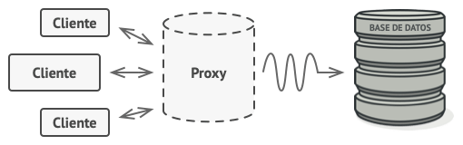
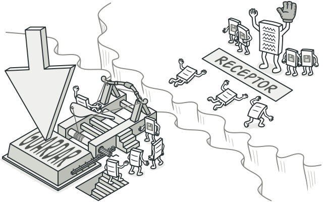

Patrones De Diseño
By Juan Sebastian Soler España
Presentado Por:
👇
Juan Sebastian Soler España Factory Method
Factory Method
❓
¿Que es factory method?

El método de fábrica es un patrón de diseño creacional, es decir, relacionado con la creación de objetos . El patrón Factory Method se utiliza para crear objetos sin especificar la clase exacta de objeto que se creará. Este patrón es útil cuando necesitas desacoplar la creación de un objeto de su implementación.
Abstract Factory:📈

El propósito de Abstract Factory es proporcionar una interfaz para crear familias de objetos relacionados, sin especificar clases concretas .💻
Adapter🗃

El patrón adaptador se utiliza para transformar una interfaz en otra, de tal modo que una clase que no pueda utilizar la primera haga uso de ella a través de la segunda
Bridge
Es un patrón de diseño estructural que te permite dividir una clase grande, o un grupo de clases estrechamente relacionadas, en dos jerarquías separadas (abstracción e implementación) que pueden desarrollarse independientemente la una de la otra.

Es un patrón de diseño creacional que nos permite construir objetos complejos paso a paso. El patrón nos permite producir distintos tipos y representaciones de un objeto empleando el mismo código de construcción.
Prototype

Es un patrón de diseño creacional que nos permite copiar objetos existentes sin que el código dependa de sus clases.
Composite
¿Que Es Composite?

Es un patrón de diseño estructural que te permite componer objetos en estructuras de árbol y trabajar con esas estructuras como si fueran objetos individuales.
DECORATOR 🖌️

Es un patrón de diseño estructural que te permite añadir funcionalidades a objetos colocando estos objetos dentro de objetos encapsuladores especiales que contienen estas funcionalidades.

Singleton
Es un patrón de diseño creacional que nos permite asegurarnos de que una clase tenga una única instancia, a la vez que proporciona un punto de acceso global a dicha instancia.
!Facade!
- Lenguaje independiente
El Cliente utiliza la fachada en lugar de invocar directamente los objetos del subsistema..
- Fachada Adicional
Puede crearse una clase fachada adicional para evitar contaminar una única fachada con funciones no relacionadas que podrían convertirla en otra estructura compleja. Las fachadas adicionales pueden utilizarse por clientes y por otras fachadas.

Flyweight
El patrón Flyweight se usa para reducir el uso de memoria y mejorar el rendimiento al reducir la creación de objetos. El patrón busca objetos similares que ya existen para reutilizarlo en lugar de crear otros nuevos que sean similares.
Proxy
Se utiliza para crear objetos que pueden representar funciones de otras clases u objetos y la interfaz se utiliza para acceder a estas funcionalidades
 Chain of Responsibility
Chain of Responsibility
Comamand
Convierte una solicitud en un objeto independiente que contiene toda la información sobre la solicitud. Esta transformación permite parametrizar métodos con diferentes solicitudes, retrasar o poner en cola la ejecución de una solicitud y respaldar operaciones que no se pueden deshacer.
Interpreter
El patrón de diseño Interpreter es un patrón de diseño estructural que se utiliza para dar una interpretación a un lenguaje específico. Esto se logra mediante la creación de un intérprete que se encarga de analizar y ejecutar las instrucciones del lenguaje.

Iterator
Iterator es un patrón de diseño de comportamiento que te permite recorrer elementos de una colección sin exponer su representación subyacente (lista, pila, árbol, etc.).

observer
Observer es un patrón de diseño de comportamiento que te permite definir un mecanismo de suscripción para notificar a varios objetos sobre cualquier evento que le suceda al objeto que están observando.

Visitor
Visitor es un patrón de diseño de comportamiento que te permite separar algoritmos de los objetos sobre los que operan.✅
MVC
MVC es un patrón de diseño que considera dividir una aplicación en tres módulos claramente identificables y con funcionalidad bien definida: El Modelo, las Vistas y el Controlador.